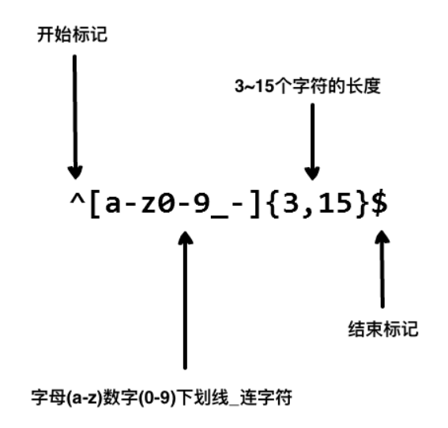
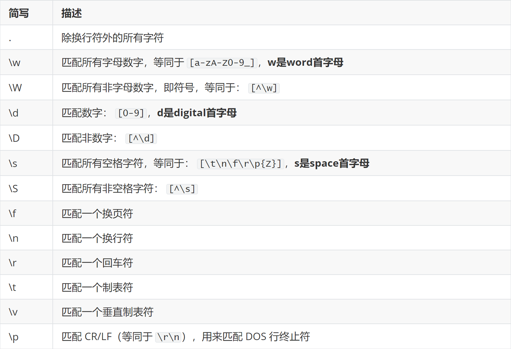

5分钟轻松学正则表达式¶

正则表达式是什么？¶
正则表达式，是一个表达式，用少量的简单字符，来表示复杂的长字符串。
实际工作用到很多，比如日志搜索、查找替换、JMeter 响应数据提取等。
先看一个例子，用户名包含字符、数字、下划线和连字符，并限制字符的个数：

这个表达式可以接受
john_doe、jo-hn_doe、john12_as，但是无法匹配到
Jo，因为它包含了大写的字母而且太短了。
字符匹配¶
正则表达式之所以强大，是因为通过一些特殊字符，能让它匹配到更多字符串。
表达式[]¶
字符集。匹配方括号内的任意字符。并且字符是无先后顺序的。
例：[Tt]he => The car parked in the garage.
方括号的句号就表示句号。
例：ar[.] => A garage is a good place to park a car.
表达式*¶
匹配 >= 0 个重复的在 * 号之前的字符。
例：a* => babaa123.
例：[a-z]* => The car parked in the garage #21.
* 字符和 . 字符搭配可以匹配所有的字符 .*。
表达式{n,m}¶
匹配 num 个大括号之前的字符或字符集 (n <= num <= m)。
例：[0-9]{2,3} => The number was 9.9997 but we rounded it off to
10.0.
可以省略第二个参数，表示至少。
例：[0-9]{2,} => The number was 9.9997 but we rounded it off to
10.0.
逗号也省略掉则表示重复固定的次数。
例：[0-9]{3} => The number was 9.9997 but we rounded it off to
10.0.
表达式(xyz)¶
字符集，匹配与 xyz 完全相等的字符串，括号内的被视为一个整体。
JMeter 中，通过小括号来提取字符串中的子字符串。
例："token":"(.*?)","expired_at" => “token”:“123”,“expired_at”
转义¶
对于正则表达式的这些特殊字符：
{ } [ ] ( ) / \ + * . $ ^ | ?
如果需要匹配，那么需要使用反斜杠 \ 进行转义。
例："(f|c|m)at\.?" => The fat cat sat on the mat.
简写字符集¶

忽略大小写¶
不同编程语言写法不同，比如 Python 可以通过
re.compile('pattern', re.I) 来忽略大小写。
小结¶
本文首先通过一个例子介绍了正则表达式是什么样子的，接着对字符匹配的特殊字符进行了讲解和示例说明，然后给出了简写字符集。正则表达式默认是贪婪模式，可以使用
?
来转为非贪婪。也可以添加参数，让正则表达式忽略大小写等。最后给出了在线测试正则表达式地址，方便调试看结果。本文内容已经足够在工作中使用，更多高级用法可以通过参考资料进一步阅读。
参考资料：
https://en.wikipedia.org/wiki/Regular_expression
https://docs.python.org/3/library/re.html
https://github.com/ziishaned/learn-regex
https://www.cnblogs.com/huxi/archive/2010/07/04/1771073.html